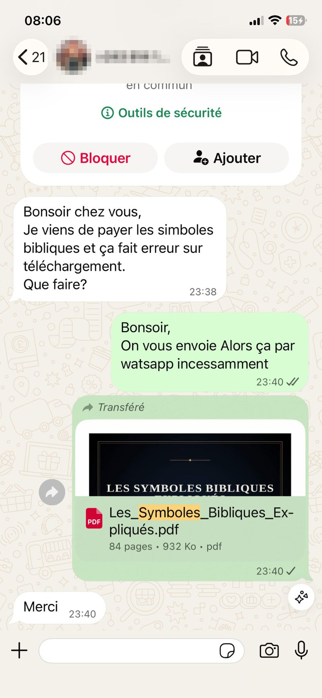
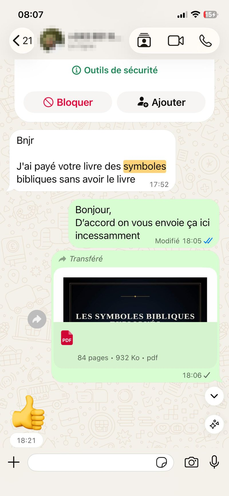
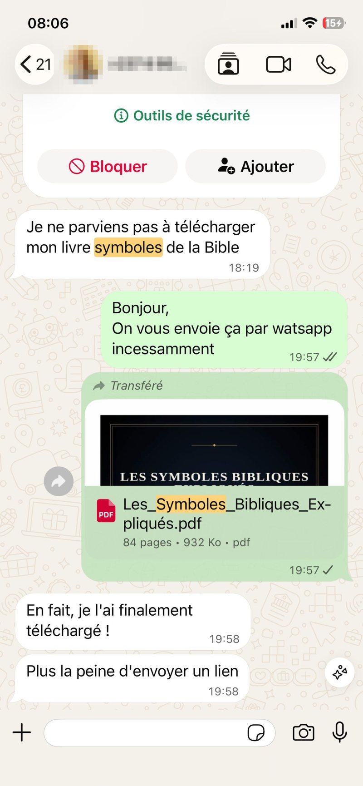

Si l'une de ces situations vous parle...
Ce n'est pas vous qui lisez mal la Bible. C'est le symbole qui vous manque.
Vous butez sur l'Apocalypse
Quatre cavaliers, une bête, une femme, un dragon, un nouveau ciel... les visions s'enchaînent et vous perdez le fil. Vous finissez par sauter les chapitres les plus symboliques du Nouveau Testament.
Un même symbole revient partout, sans explication
Un agneau, le chiffre sept, la couleur pourpre, une colombe... vous voyez la répétition, mais son sens exact vous échappe à chaque nouvelle occurrence.
Vous hésitez entre deux excès
Ignorer les symboles et lire au premier degré, au risque de manquer l'essentiel — ou chercher des réponses en ligne et tomber sur des interprétations douteuses, numérologiques, voire complotistes (le 666, les « calculs » de dates de fin du monde...).
Les dictionnaires bibliques classiques sont arides
Vous voudriez un outil sérieux et fiable, mais pas un pavé universitaire qu'on ouvre à contrecœur. Vous cherchez quelque chose qui se lit vraiment.
La méthode
Un livre construit pour vous apprendre à lire les symboles, pas seulement à les mémoriser
Les Symboles Bibliques Expliqués répond directement à ces frustrations : il ne se contente pas de lister des symboles, il vous apprend une méthode que vous pourrez réutiliser vous-même, verset après verset.
Contexte biblique
D'où vient le symbole, dans quel récit et quelle culture il apparaît pour la première fois.
Occurrences clés
Les passages majeurs où il revient, de la Genèse à l'Apocalypse.
Sens théologique
Ce que le symbole signifie réellement, sans extrapolation ni spéculation.
Accomplissement dans le NT
Comment le symbole trouve sa pleine portée en Jésus-Christ et dans le Nouveau Testament.
Chaque chapitre suit ce même gabarit, avec des encadrés « Point clé » et « Attention », une checklist de fin de chapitre et une phrase de synthèse. Ce n'est pas un gadget pédagogique : c'est ce qui vous permet d'avancer avec méthode plutôt qu'à l'intuition — et d'éviter les deux pièges classiques, la lecture plate et la sur-interprétation spéculative.
Concrètement, pour votre lecture
Ce que ce livre change dans votre façon de lire la Bible
- Vous saurez ce qu'est un symbole biblique et comment l'interpréter sans vous tromper, dans son contexte, de la Genèse à l'Apocalypse.
- Vous comprendrez pourquoi l'eau, le feu, le vent ou la lumière reviennent sans cesse — et ce que chacun révèle selon le passage.
- La montagne, le désert, Babylone ou la Jérusalem céleste cesseront d'être de simples décors : vous saisirez ce qu'ils signifient réellement.
- Vous saurez pourquoi l'Agneau, le Lion, le Serpent ou la Colombe apparaissent — et ne confondrez plus leurs sens, parfois opposés selon le contexte.
- Le blanc, l'écarlate, le pourpre ou l'or ne seront plus de simples détails visuels : ils porteront tout leur poids théologique.
- L'huile, le pain, le sang, l'encens ou le voile du temple prendront un sens neuf, jusque dans leur accomplissement en Christ.
- Vous saurez pourquoi la Bible répète 3, 7, 12 ou 40 — et vous comprendrez le 666 sans jamais glisser vers le calcul de dates.
- Le lavement des pieds, le jeûne, l'imposition des mains ou le baptême retrouveront toute leur portée symbolique.
- Vous ne survolerez plus les visions de l'Apocalypse sans les comprendre : les quatre êtres vivants, les cavaliers, la bête, la femme prendront enfin sens.
- Vous verrez comment tous ces symboles convergent vers une seule personne : Jésus, l'Agneau, la Porte, le Bon Berger, la Lumière du monde.
- Vous garderez un outil de référence complet — dictionnaire, tableau récapitulatif, index biblique — à reconsulter chapitre après chapitre.
À l'intérieur du livre
10 chapitres, une progression pensée pour être lue du début à la fin
01 Les fondations
Qu'est-ce qu'un symbole biblique, pourquoi la Bible parle par symboles, comment l'interpréter selon le contexte, la continuité entre Ancien et Nouveau Testament, et les pièges à éviter dès le départ.
02 Les éléments de la nature
Eau, feu, vent et souffle, pluie et rosée, lumière et ténèbres : le vocabulaire symbolique le plus fréquent de toute la Bible, enfin expliqué.
03 Les lieux symboliques
Montagne, désert, mer, ciel, Éden, Égypte, Babylone, Jérusalem, temple, Nouvelle Jérusalem : la géographie biblique comme langage théologique.
04 Les animaux symboliques
Agneau, lion, serpent, aigle, colombe, poisson, bœuf, cheval, brebis, chèvre, corbeau : pourquoi un même animal peut porter des sens très différents selon le passage.
05 Les couleurs bibliques
Blanc, rouge et écarlate, bleu, pourpre, noir, vert, or, argent : ce que chaque couleur signifiait pour les premiers lecteurs de la Bible.
06 Objets et éléments sacrés
Huile, pain, vin, sang, sel, encens, chandelier, arche, autel, voile, pierre, couronne, bâton, épée, vêtements : le sens du culte et de ses objets.
07 Les nombres sacrés
3, 4, 6, 7, 8, 10, 12, 40, 70 — et le 666 traité en profondeur, avec deux lectures (historique et symbolique), sans aucune spéculation de calendrier ou de calcul de date.
08 Gestes et actions symboliques
Lavement des pieds, imposition des mains, jeûne, baptême, s'agenouiller, lever les mains, les signes prophétiques mimés par les prophètes.
09 Symboles prophétiques et apocalyptiques
Les quatre êtres vivants, les quatre cavaliers, la bête, le dragon, la femme, la prostituée de Babylone, le nouveau ciel et la nouvelle terre.
10 Jésus et le Royaume à travers les symboles
L'Agneau, le Lion, la lumière du monde, le pain de vie, la porte, le bon berger, le vrai cep, le corps du Christ, l'épouse, le Royaume : la convergence de tous les symboles vers une seule personne.
Le livre se termine par une conclusion méthodologique et 5 annexes : un dictionnaire alphabétique d'une soixantaine de symboles, un tableau récapitulatif, les symboles les plus fréquents, les symboles à sens variable selon le contexte, et un index des références bibliques classé par livre.
Pour qui est ce livre — et pour qui il ne l'est pas
Ce livre est pour vous si...
- Vous lisez déjà la Bible (ou voulez vous y remettre) et butez régulièrement sur des passages symboliques.
- Vous voulez comprendre l'Apocalypse sans vous perdre dans ses visions.
- Vous cherchez un outil de référence sérieux, à garder et reconsulter, pas un livre qu'on lit une fois.
- Vous êtes curieux de culture biblique, croyant ou en recherche, sans prérequis théologique.
Ce livre n'est pas pour vous si...
- Vous cherchez des prédictions, des dates ou des calculs sur la fin des temps.
- Vous voulez une lecture numérologique ou complotiste du 666 et des textes prophétiques.
- Vous cherchez un traité académique exhaustif plutôt qu'un guide accessible et structuré.
Retours clients, sans retouche
Ils ont payés et ont reçu leur livre 📚
Après leur achat, voici quelques retours de clients ayant bien reçu leur commande.



En cas de souci après votre achat, nous vous répondons rapidement pour que vous receviez votre exemplaire.
Questions fréquentes
Avant de vous décider
Faut-il des connaissances théologiques pour comprendre ce livre ?
Non. Le livre ne suppose aucun prérequis : chaque symbole est expliqué depuis sa base, dans un français clair, pour un lecteur curieux comme pour un lecteur déjà avancé dans l'étude biblique.
En quoi ce livre est-il différent d'un dictionnaire biblique classique ?
Un dictionnaire se consulte terme par terme. Ce livre suit une méthode complète (contexte → occurrences → sens → accomplissement) et peut se lire du début à la fin comme un vrai livre, tout en gardant, grâce à ses annexes, l'utilité d'un ouvrage de référence.
Le livre traite-t-il du chiffre 666 et des textes prophétiques ?
Oui, dans le chapitre sur les nombres sacrés et celui sur les symboles apocalyptiques, avec deux lectures — historique et symbolique — sans aucune spéculation de calendrier ni de calcul de date.
Sous quel format vais-je recevoir le livre ?
Le livre est fourni au format PDF.
Quel est le prix du livre ?
Pour connaître le prix et commander, cliquez sur « Commander maintenant ».
Comment vais-je recevoir le livre après l'achat ?
Après confirmation du paiement, le téléchargement du PDF est disponible « immédiatement » après l'achat.
Les Symboles Bibliques Expliqués
Ne refermez plus jamais votre Bible sans comprendre ce qu'elle vous montre
89 pages pour apprendre, une fois pour toutes, à reconnaître et interpréter les symboles bibliques — avec méthode, sans lecture plate ni sur-interprétation.
Je commande Les Symboles Bibliques Expliqués